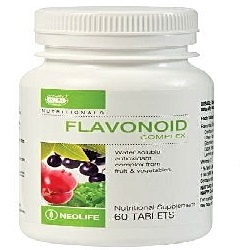

Flavonoid Fraction

- ဒီဆေးသည် သွေးပြန်ကြောများကို ကျုံ့စေသည်။
- သွေးကြောများ၏ လုပ်ငန်းဆောင်တာများကို ကောင်းမွန်စေသည်။
- လိပ်ခေါင်း ကဲ့သို့သော နာတာရှည် သွေးပြန်ကြော ရောဂါများတွင် အသုံးပြုသည်။
- ထိုအပြင် လိပ်ခေါင်းခွဲစိတ်ပြီးသောအခါ လက္ခဏာဝေဒနာများ သက်သာစေရန်လည်း အသုံးပြုသည်။
- ဈေးကွက်ထဲတွင် Daflon ဟု အသိများသည်။
အသုံးဝင်ပုံ
- ခြေထောက်များလေးလံခြင်း နာကျင်ခြင်း ညဘက်ကြွက်တက်ခြင်း စသော ရောဂါ လက္ခဏာများ ခံစားရသော နာတာရှည် သွေးပြန်ကြော ရောဂါများတွင် အသုံးပြုသည်။
- လိပ်ခေါင်းရောဂါ ရုတ်တရက် ပိုဆိုးလာပါကလည်း အသုံးပြုသည်။
- ထို့အပြင် ခြေထောက်တွင် အဖြစ်များသော သွေးကြောထုံးခြင်းနှင့် သွေးလည်ပတ်မှု မကောင်းခြင်းများအတွက်လည်း အသုံးပြုသည်။
သုံးစွဲပုံ
- နာတာရှည် သွေးပြန်ကြော ရောဂါများအတွက် တစ်နေ့နှစ်လုံး ပုံမှန် သောက်ပါ။
- လိပ်ခေါင်းရောဂါ ရုတ်တရက် သွေးထွက်များပါက တစ်နေ့ ခြောက်လုံး လေးရက်သောက်ပါ။ ထို့နောက် တစ်နေ့ လေးလုံးကို နောက်ထပ် သုံးရက် ဆက်သောက်ပါ။
ဘေးထွက်ဆိုးကျိုးများ
အချို့သောလူနာများတွင် အစာအိမ်နှင့်အူလမ်းကြောင်း လက္ခဏာများ (ဗိုက်အောင့်ခြင်း ဝမ်းလျောခြင်း) နှင့် အာရုံကြော လက္ခဏာများ အနည်းငယ် ခံစားရနိုင်သည်။
သို့သော် ဆေးသောက်ခြင်းကို ရပ်ပစ်ရန် မလိုအပ်ပါ။
သတိပြုရမည့်အချက်များ
- ဆေးသောက်ရန် မေ့သွားပါက သတိရရခြင်းသောက်ပါ။ အကယ်၍ နောက်တစ်ကြိမ် သောက်ရန်နှင့် နီးနေပါက မေ့သွားသော အကြိမ်အတွက် သောက်ရန် မလိုပါ။
- ကိုယ်ဝန်ဆောင်ချိန် သောက်ခြင်းဖြင့် အန္တရာယ်ရှိကြောင်း မတွေ့ရှိရပါ။ သို့သော် ဆရာဝန်နှင့် တိုင်ပင် ဆွေးနွေးရန် လိုအပ်သည်။ သို့ရာတွင် နို့တိုက်မိခင်များတွင် မသုံးစွဲသင့်ပါ။
ဆေးအာနိသင်
- Amlodipine, Aspirin, Atorvastatin, Metformin, Digoxin စသောဆေးများနှင့် တွဲမသောက်သင့်ပါ။
- အခြားဆေးများ သောက်သုံးနေသည် ရှိပါက ဆရာဝန်နှင့် တိုင်ပင် ဆွေးနွေးပါ။
ဆေးအလွန်အကျွံသုံးခြင်း
- ဆေးပမာဏ များစွာ သောက်ခြင်းသည် ရောဂါလက္ခဏာများ မသက်သာစေသည့်အပြင် အဆိပ် သင့်ခြင်းနှင့် ပြင်းထန်သော ဘေးထွက်ဆိုးကျိုးများ ရစေသည်။ ထိုအခါမျိုးတွင် အရေးပေါ် အဆိပ်ကု ဌာနသို့ သွားရောက်ပြသရန်လိုသည်။
- ဆေးတွေကို ဘယ်ဆေးမဆို ဆရာဝန် ဒါမှမဟုတ် တတ်ကျွမ်းနားလည်တဲ့ ကျန်းမာရေးဝန်ထမ်းတွေရဲ့ ညွှန်ကြားချက်အတိုင်း တိတိကျကျ သောက်သင့်ပါတယ်။
- မိမိသဘောနဲ့ဆေးရပ်လိုက်တာမျိုး မလုပ်သင့်ပါဘူး။
- ဘေးထွက်ဆိုးကျိုး ပြင်းပြင်းထန်ထန် ခံစားရရင်တော့ ဆရာဝန်နဲ့တိုင်ပင်ဖို့ လိုအပ်ပါတယ်။
Source– ဒေါက်တာချစ်စန္ဒီကျော်